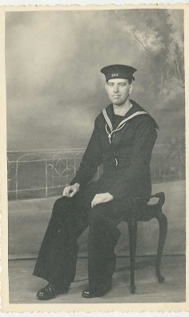

My Grandfather
Rob Blackwell, 09 February 2005
My Aunt Janet, a teacher, asked my grandfather to record some World War II Memories in 1994 so that she could use the material in her class history lesson.
I recently converted the audio cassette recording to MP3 in an effort to preserve it for future generations and make it more widely available.
The recording describes my maternal grandfather's experience as a geography teacher in 1939, the announcement of Hitler invading Poland, evacuation from West Ham and an air raid.
You can download it here [ 7Mb MP3 file].
Sadly there are no further installments. It would have been interesting to hear of his experiences taking morse code in the Navy.

Arthur Edward Richard Rowe, c1942.